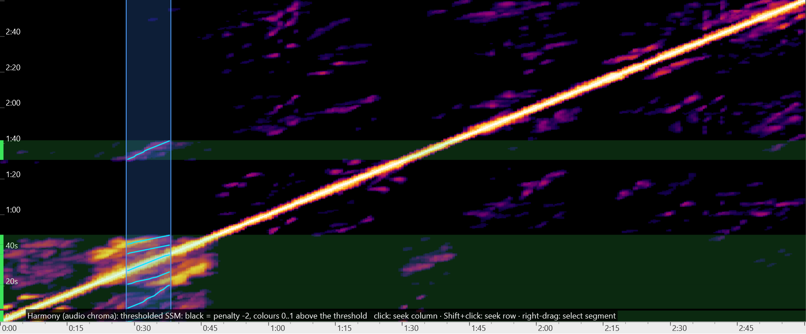

Tour 3: only a motif returns
Generated piece 12. Open project R2P2N12, select n3. A short lesson in not being fooled.
1. Self-similarity matrix (M)
What comes back?

1234- The first 48 seconds resemble each other: one kind of music, several short cyan lines.
- One short cyan line far up: 1:31 to 1:42 resembles the selected 10 seconds.
- This cyan line is steep: that occurrence (0:07 to 0:21) is longer than the selected segment, so it is stretched to match.
- No long stripe anywhere beside the diagonal.
Short, crooked, differently sloped lines are the mark of likeness, not of a repeated section. Compare them with the long straight ones of tours 1 and 2.
2. Scape plot, raising the minimum
Does it survive?


0.270, then 0.174 at 20 s, then 0.097. The thumbnail falls apart as you ask for a longer one. September and piece 16 did not move at all.
3. Listen at 1:31
And the ear?
A listener heard 1:30 as close to the opening. The match the program found is weak (0.33 on a scale where September's return has 0.91), and it pairs 1:31 with 0:28 rather than with the opening. Both are right in their way: a short recalled idea is real to an ear and almost nothing to a measure built for sections.